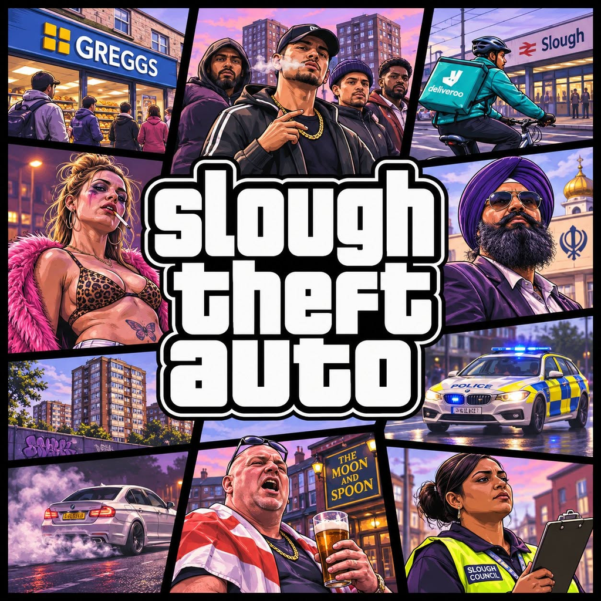

Download Slough Theft Auto
An open-world crime game set in Slough, built from real street data. Find your own house. Steal your own car. Get run over outside your own Greggs.
Needs a 64-bit PC or Apple Silicon Mac, a graphics card, 8 GB of RAM and the will to live.
Linux: the AppImage is one file for any distribution. Make it executable (chmod +x) and run it. There's a .deb and a .tar.gz on the release page too.
All releases on GitHub.